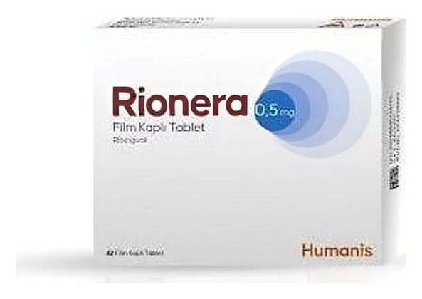

Rionera 0,5 mg Film Kaplı Tablet, 84 adet

Ne için kullanılır
KT · Bölüm 1• RİONERA, film kaplı tabletler şeklinde kullanıma sunulmuştur. Her bir film kaplı tablet 0,5 mg etkin madde (riociguat) içermektedir. • RİONERA laktoz monohidrat (sığır) içerir.
• RİONERA, karton kutuya yerleştirilmiş PVC/PVDC/Alüminyum folyo blister ambalajlarda 42 ve 84 film kaplı tabletlerdir. Tabletlerin bir tarafı ‘’0,5’’ oymalı, yuvarlak, bikonveks, beyaz renklidir.
• RİONERA’nın etkin maddesi olan riociguat, çözünür bir guanilat siklaz (sGC) uyarıcısıdır. Pulmoner arterleri (kalpten akciğerlere kan taşıyan kan damarları) genişleterek ve böylelikle kalbin akciğerlere kan pompalamasını kolaylaştırarak etki gösterir. • RİONERA ile tedavi akciğer damarlarındaki yüksek kan basıncını düşürerek; egzersiz kapasitesinde iyileşme sağlar ve yetişkinlerde aşağıda açıklanmış olan iki pulmoner hipertansiyon (akciğerin kan damarlarındaki yüksek kan basıncı) tipinde kullanılabilir: - Kronik tromboembolik pulmoner hipertansiyon (KTEPH)
RİONERA, KTEPH'li yetişkin hastaların tedavisinde kullanılır. KTEPH hastalığı, kan akışını daraltan ya da bloke eden sabit kan pıhtılarının neden olduğu akciğer kan damarlarındaki (pulmoner arterler) kan basıncının yüksek olmasıdır. Akciğer kan damarlarındaki yüksek pulmoner kan basıncı, akciğerlere kan pompalayabilmek için kalbin daha yoğun çalışması gerektiği anlamına gelir. Bunun sonucunda kişiler kendilerini yorgun hisseder, baş dönmesi ve nefes darlığı yaşar.
RİONERA, ameliyata uygun olmayan KTEPH'li (inoperabl KTEPH) hastalarda ya da cerrahi tedavi sonrasında dirençli veya tekrarlayan yüksek kan basıncı olan hastalarda kullanılır.
- Pulmoner arteriyel hipertansiyon (PAH)
RİONERA, kalpten akciğerlere kan taşıyan kan damarlarında (pulmoner arterler) yüksek kan basıncı ile tanımlanan bir hastalık olan PAH hastalığına sahip yetişkin hastaların tedavisinde kullanılır. PAH hastalarında bu damarlar daralarak, akciğerlere kan pompalayabilmek için kalbin daha yoğun çalışmasına sebep olur. Bunun sonucunda kişiler kendilerini yorgun hisseder, baş dönmesi ve nefes darlığı yaşar.
RİONERA tek başına ya da PAH tedavisinde kullanılan belirli ilaçlarla (endotelin reseptör antagonistleri veya prostanoidler olarak adlandırılan) birlikte alınabilir.